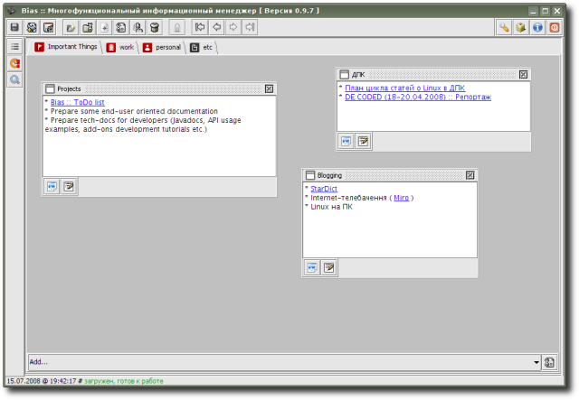

DashBoard - что-то вроде “доски”, к которой “прикрепляются” фрагменты разного типа и размера; пока-что присутствует лишь два типа фрагментов: обычные текстовые заметки и заметки в HTML-формате, со временем, однако (по мере развития расширения), их, вероятно, станет больше; тем пользователям, которым нравится визуально организовывать данные в наиболее удобной для них “хаотичной” форме, расширение DashBoard должно понравиться.
Предварительный просмотр:
